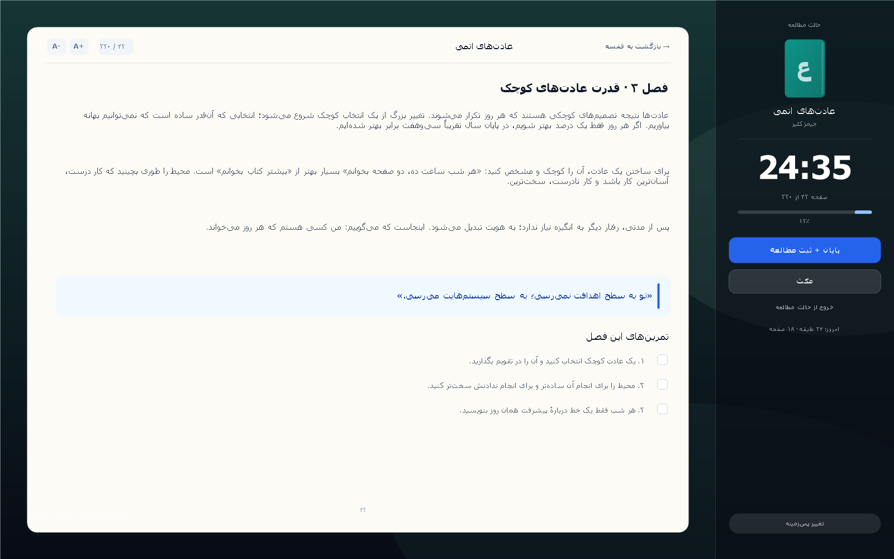
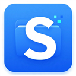

امروز
کارهای امروز، اولویتها و کارهای عقبافتاده؛ با پشتیبانی از هزاران تسک بدون کندی.
کارهای روزانه، پروژههای ساختمانی، کارگران، مالی، اهداف و کتابخوانی — یک دستیار ویندوز که بدون اینترنت هم کامل کار میکند و دادههایت را روی دستگاه خودت نگه میدارد.
نسخهٔ 1.9.18 6.9 MB Windows 10/11 x64

یک اپ، تمام کارها
بخشها به هم وصلاند: کارها، پروژهها، کارگران، هزینهها و اهداف در یک تصویر روشن.
کارهای امروز، اولویتها و کارهای عقبافتاده؛ با پشتیبانی از هزاران تسک بدون کندی.
کارتها را بکش و رها کن؛ از فهرست تا در حال انجام، متوقف و انجامشده.
قرارداد، دریافتی، هزینه، سود، مراحل اجرا، عکس نمونهکار و صورتوضعیت متراژ.
تقویم روزانه، ساعت کار، مزد هفتگی و ماهانه، پرداختها و مانده حساب هر نیرو.
دفتر دریافتی و پرداختی، دستهبندی هزینهها، نمودار ماهانه و سبد طلا، دلار و سهام.
مبلغ هدف، کنارگذاری ماهانه و زمان رسیدن؛ جلوتر یا عقبتر بودن مسیر را ببین.
قفسهٔ کتاب، PDF و Word، یادداشت چسبان، تایمر مطالعه و آمار صفحه و دقیقه.
عادتهای روزانه، پومودورو، گزارش هفتگی، تمرین باشگاه و عکسهای پیشرفت بدن.
تازه در نسخهٔ ۱٫۹٫۱۸
دو دکمهٔ روشن برای ذخیره و بازیابی، رمزنگاری خودکار ابری و دسترسی مستقیم به پشتیبانی.
«ذخیره داده» و «بازیابی داده»؛ بقیهٔ گزینهها داخل پنجرهٔ همان دکمهاند و تنظیمات شلوغ نیست.
کلید را خود برنامه میسازد و با DPAPI روی دستگاه نگه میدارد؛ رمزی از شما پرسیده نمیشود.
از فایل، از نسخههای خودکار داخل برنامه یا از بکاپ ابری — همه در یک پنجره.
ایمیل پشتیبانی sazorasupport@gmail.com در تنظیمات و همین صفحه در دسترس است.
بکاپهای قدیمی رمزدار همچنان با همان رمز قبلی بازیابی میشوند.
بهروزرسانی، حافظه و پاکسازی داده داخل بخشهای جمعشونده رفتند.
نگاهی به داخل برنامه
کتابخانه، حالت مطالعه و تایمر؛ نمونهای از بخش کتابخوانی SAZORA.

نصب روی ویندوز
فایل نصب را اجرا کنید؛ نسخهٔ قبلی و اطلاعات شما در جای خود میماند. نسخهٔ نصبی هنگام باز شدن، بهروزرسانیها را خودش بررسی میکند.
پرسشهای رایج
نه. کارها، پروژهها، مالی، اهداف و کتابخوانی آفلاین کار میکنند. فقط بررسی بهروزرسانی و بهروزرسانی قیمت داراییها از اینترنت استفاده میکند.
داخل IndexedDB مرورگر داخلی برنامه در مسیر %LocalAppData%\SAZORA\WebView2Data. پشتیبان خودکار هم آخرین ۵ نسخه را داخل برنامه نگه میدارد و میتوانید یک فایل JSON هم در پوشهٔ دلخواه داشته باشید.
نسخهٔ نصبی هنگام باز شدن، آخرین انتشار GitHub را بررسی میکند. با تأیید شما فایل بهروزرسانی دانلود و SHA-256 آن بررسی میشود، سپس برنامه بسته، جایگزین و دوباره باز میشود.
PDF و اسناد Word بهصورت آفلاین. قفسه، جلد، یادداشت چسبان، تایمر مطالعه و آمار صفحه و دقیقه هم در همان بخش است.
نه. SAZORA برای کار اصلی به حساب کاربری یا سرور نیاز ندارد؛ دادهها روی همان ویندوز شما میمانند.
حداقل نسخهٔ پشتیبانیشده Windows 10 نسخهٔ 1809 (x64) است. WebView2 هم لازم است؛ اگر نصب نباشد، نصبکننده راهنمایی میکند.

از همین سازنده
مرتبسازی فایلها بر اساس نوع و تاریخ، تاریخ واقعی عکسها، پیدا کردن تکراریها و زمانبندی خودکار برای ویندوز.